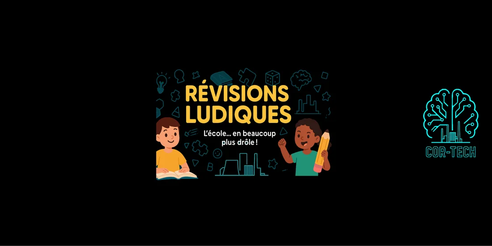

Réviser autrement
RÉVISIONS LUDIK.
Des révisions pour chercher, jouer, comprendre et progresser ensemble.
Horaire de l’atelier · Révisions LudiquesMardi et jeudi · 17h00–18h00Voir tous les horaires →
Apprendre autrement
Réviser peut aussi donner envie.
Révisions Ludik propose d’aborder les révisions avec une approche plus ludique et participative. On cherche, on essaie, on échange et on progresse à son rythme.
Pour connaître les séances proposées, le public concerné et les modalités d’inscription, contactez COR-TECH.
Se renseigner sur Révisions Ludik →
Curiosité, entraide et plaisir d’apprendre.
Se poser des questions
Comprendre ce qui bloque et chercher d’autres chemins pour avancer.
Apprendre en jouant
Utiliser des jeux et des défis pour rendre les révisions plus vivantes.
Progresser ensemble
Partager ses idées et prendre confiance à son rythme.
Une question ?
Nous contacter →Parlons de vos besoins.
Nous vous renseignerons sur les prochaines séances et l’inscription.
Tarif 2026 · Révisions Ludiques : 65 €Voir tous les tarifs →